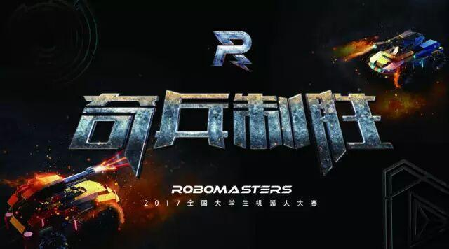

RoboMaster2017 奇兵制胜，机器人大赛日程公布
点击上方蓝字“沈理电协”一起玩耍

RoboMasters 机器人大赛
2017赛季 奇兵制胜
现正式打响战鼓
RoboMasters2017 大赛宣传片
本视频时长1分45秒，请在WIFI环境观看
> 赛事简介 <
“全国大学生机器人大赛RoboMasters2017”（以下简称“RM2017”）是由共青团中央、全国学联、深圳市人民政府联合主办，DJI大疆创新发起并承办的全国级机器人赛事。
RM2017包含“机器人对抗赛”、“机器人技术挑战赛”、“ICRA机器人挑战赛”，2017赛季共有超过210支海内外高校代表战队报名参加比赛。
> 机器人对抗赛 <
热身赛
4月7日至4月9日
深圳 DJI RoboMasters研发基地
大赛前的预备战役
西部分区赛
5月12日至5月14日
成都 成都信息工程大学 航空港校区体育馆
西部高校代表队争夺全国赛晋级名额
南部分区赛
5月12日至5月14日
广州 华南理工大学 大学城校区体育馆
南部高校代表队争夺全国赛晋级名额
北部分区赛
5月19日至5月21日
北京 中国石油大学（北京） 校体育馆
北部高校代表队争夺全国赛晋级名额
东部分区赛
5月19日至5月21日
上海 上海交通大学 校霍英东体育馆
东部高校代表队争夺全国赛晋级名额
踢馆赛
7月29日至7月30日
深圳 深圳湾华润体育中心春茧体育馆
国内出线战队与海外战队背水一战
全国赛
8月1日至8月6日
深圳 深圳湾华润体育中心春茧体育馆
全球高校代表队争夺总冠军奖杯
> 技术挑战赛 <
技术挑战赛
7月30日、8月1日至8月3日
深圳 深圳湾华润体育中心春茧体育馆
空中和地面机器人全自动技术比拼
> ICRA机器人挑战赛 <
ICRA2017 机器人挑战赛
5月29日至5月31日
新加坡 滨海湾金沙酒店
地面机器人全自动技术比拼
> 赛制信息 <
①报名参加对抗赛的国内高校代表队，需要经过技术报告、分区赛的筛选之后，才能进入总决赛；分区赛有24个名额直接晋级总决赛，其余国内出线战队与海外代表队一同参加踢馆赛，争夺最后的总决赛晋级资格；
②分区赛由4个地方重点高校于5月份承办，届时国内参赛队伍将根据技术测评分数、技术报告审核结果等安排赛区，海外参赛队伍将直接参加踢馆赛；
③技术挑战赛和ICRA机器人挑战赛为独立运营的比赛，赛制为地面或空中机器人的全自动任务式竞赛；
编辑：信息部 白金朋
了解更多 长按关注